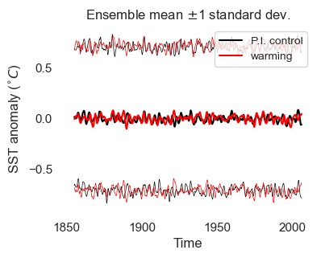

import xarray as xr
import numpy as np
import pandas as pd
from tqdm import tqdm
import matplotlib.pyplot as plt
import seaborn as sns
import cftime
import cartopy.crs as ccrs
import nc_time_axis
## set plotting style
sns.set(rc={"axes.facecolor": "white", "axes.grid": False})
## initialize random number generator
rng = np.random.default_rng()
Define stochastic climate model#
def get_T_bar(t, trend, trend_type="exp"):
"""Get 'background' temperature for stochastic climate model at times 't'.
Args:
- 't' is array of times (in units of years)
- 'trend' is float representing linear trend in background temperature,
computed based on initial and final background temperature (units of K/year)
- 'trend_type' is one of {"exp","linear"}, indicating whether the shape
of the background temperature curve should be exponential or linear
"""
## get final and initial times
tf = t[-1]
ti = t[0]
## get "background" temperature
if trend_type == "exp":
a = 3e-2
b = trend * (tf - ti) * np.exp(-a * (tf - ti))
T_bar = b * np.exp(a * (t - ti))
elif trend_type == "linear":
T_bar = (t - t[0]) * trend
else:
print("Not a valid trend type")
T_bar = 0.0
return T_bar
def recharge_oscillator(
ti,
tf,
dt=1 / 365.25,
gamma=0.5,
omega0=5 / 3,
n=1.0,
n_members=1,
trend=0,
trend_type="exp",
nyears_spinup=10,
):
"""
Simple version of recharge oscillator model used by Burgers et al. (2005).
Args:
- ti: number representing initial time (units: years)
- tf: number representing final time (units: years)
- dt: timestep (units: years)
- gamma: damping rate (units: 1/year)
- omega0: effect of h anomalies on dT/dt (units: 1/year)
- n: noise amplitude (units: K / year^{1/2})
- n_members: number of ensemble members
- trend: calculated increase in "background" T, with units of K/year
(based on (T[tf]-T[ti]) / (tf-ti)
- trend_type: one of "exp" (exponential) or "linear"
- nyears_spinup: number of spinup years (discard these)
"""
## initialize RNG
rng = np.random.default_rng()
## Get timesteps and dimensions for output
t = np.arange(ti, tf, dt)
nt = len(t)
## specify number of dims for state vector (T,h)
m = 2
## get "background" state
T_bar = get_T_bar(t, trend, trend_type)
h_bar = np.zeros_like(T_bar)
x_bar = np.stack([T_bar, h_bar], axis=1)
## Create empty arrays arrays to hold simulation output
x = np.zeros([nt, m, n_members])
## initialize with random value
print(x_bar.shape)
print((n * rng.normal(size=(m, n_members))).shape)
x[0, ...] = x_bar[0,...,None] + n * rng.normal(size=(m, n_members))
## get linearized operator
L = np.array([[-2 * gamma, omega0], [-omega0, 0]])
for i, t_ in enumerate(tqdm(t[:-1])):
## get random numbers for noise
dW = np.sqrt(dt) * rng.normal(size=(1, n_members))
## Get noise (only applied to T)
N = np.array([n, 0])[:, None] * dW[None, :]
## step model forwards
dx_prime = L @ (x[i] - x_bar[i, ..., None]) * dt + N
dx_bar = x_bar[i+1] - x_bar[i]
## record new state
x[i + 1] = x[i] + dx_bar[:,None] + dx_prime
#### put in xarray
## create coordinates for xarray
coords = dict(
time=xr.cftime_range(start=cftime.datetime(ti, 1, 1), periods=nt, freq="1D"),
ensemble_member=pd.Index(np.arange(1, n_members + 1)),
)
## initialize xarray
x = xr.Dataset(
data_vars=dict(
T=(["time", "ensemble_member"], x[:, 0]),
h=(["time", "ensemble_member"], x[:, 1]),
),
coords=coords,
)
## resample to monthly
x = x.resample({"time": "MS"}).mean()
## discard model spinup
x = x.isel(time=slice(nyears_spinup * 12, None))
return x
Run the model#
## specify number of ensemble members and end year for simulation
warming_trend = 0.01 # warming trend, in deg C / year
n_members = 500 # number of ensemble members
## simulation pre-industrial and warming scenarios
T_PI = recharge_oscillator(
ti=1850, tf=2006, n_members=n_members, trend=0, nyears_spinup=5
)
T_warming = recharge_oscillator(
ti=1850, tf=2006, n_members=n_members, trend=warming_trend, nyears_spinup=5
)
## for convenience, get subset of pre-industrial control which overlaps with warming
T_PI_hist = T_PI.sel(time=T_warming.time)
(56979, 2)
(2, 500)
0%| | 0/56978 [00:00<?, ?it/s]
10%|████████████████▌ | 5943/56978 [00:00<00:00, 59399.61it/s]
23%|████████████████████████████████████▏ | 13046/56978 [00:00<00:00, 66233.67it/s]
35%|███████████████████████████████████████████████████████▋ | 20101/56978 [00:00<00:00, 68201.19it/s]
48%|███████████████████████████████████████████████████████████████████████████ | 27086/56978 [00:00<00:00, 68850.18it/s]
60%|██████████████████████████████████████████████████████████████████████████████████████████████▉ | 34222/56978 [00:00<00:00, 69750.80it/s]
73%|██████████████████████████████████████████████████████████████████████████████████████████████████████████████████▋ | 41378/56978 [00:00<00:00, 70364.92it/s]
85%|██████████████████████████████████████████████████████████████████████████████████████████████████████████████████████████████████████▌ | 48507/56978 [00:00<00:00, 70664.81it/s]
98%|██████████████████████████████████████████████████████████████████████████████████████████████████████████████████████████████████████████████████████████ | 55574/56978 [00:00<00:00, 70279.04it/s]
100%|██████████████████████████████████████████████████████████████████████████████████████████████████████████████████████████████████████████████████████████████| 56978/56978 [00:00<00:00, 69268.58it/s]
/var/folders/gd/xv4t6tlj16n5774zwn6ctwkh0000gn/T/ipykernel_7935/145567870.py:104: DeprecationWarning: cftime_range() is deprecated, please use xarray.date_range(..., use_cftime=True) instead.
time=xr.cftime_range(start=cftime.datetime(ti, 1, 1), periods=nt, freq="1D"),
(56979, 2)
(2, 500)
0%| | 0/56978 [00:00<?, ?it/s]
12%|███████████████████▍ | 6977/56978 [00:00<00:00, 69757.59it/s]
25%|███████████████████████████████████████▏ | 14142/56978 [00:00<00:00, 70868.55it/s]
37%|███████████████████████████████████████████████████████████ | 21278/56978 [00:00<00:00, 71088.17it/s]
50%|██████████████████████████████████████████████████████████████████████████████▊ | 28408/56978 [00:00<00:00, 71169.81it/s]
62%|██████████████████████████████████████████████████████████████████████████████████████████████████▌ | 35558/56978 [00:00<00:00, 71286.02it/s]
75%|██████████████████████████████████████████████████████████████████████████████████████████████████████████████████████▍ | 42697/56978 [00:00<00:00, 71318.79it/s]
87%|██████████████████████████████████████████████████████████████████████████████████████████████████████████████████████████████████████████▏ | 49829/56978 [00:00<00:00, 70855.22it/s]
100%|██████████████████████████████████████████████████████████████████████████████████████████████████████████████████████████████████████████████████████████████| 56978/56978 [00:00<00:00, 71045.94it/s]
/var/folders/gd/xv4t6tlj16n5774zwn6ctwkh0000gn/T/ipykernel_7935/145567870.py:104: DeprecationWarning: cftime_range() is deprecated, please use xarray.date_range(..., use_cftime=True) instead.
time=xr.cftime_range(start=cftime.datetime(ti, 1, 1), periods=nt, freq="1D"),
def plot_ensemble_spread(ax, T, color, label=None):
"""plot mean and +/- 1 standard dev. of ensemble on
given ax object."""
## compute stats
mean = T.mean("ensemble_member")
std = T.std("ensemble_member")
## plot mean
mean_plot = ax.plot(mean.time, mean, label=label, color=color)
## plot spread
ax.plot(mean.time, mean + std, lw=0.5, c=mean_plot[0].get_color())
ax.plot(mean.time, mean - std, lw=0.5, c=mean_plot[0].get_color())
return
## Plot ensemble stats
fig, ax = plt.subplots(figsize=(4, 3))
## plot data
plot_ensemble_spread(ax, T_PI_hist["h"], color="black", label="P.I. control")
plot_ensemble_spread(ax, T_warming["h"], color="red", label="warming")
## label axes
ax.set_xlabel("Time")
ax.set_ylabel(r"SST anomaly ($^{\circ}C$)")
ax.legend(prop={"size": 10})
ax.set_title(r"Ensemble mean $\pm$1 standard dev.")
plt.show()
